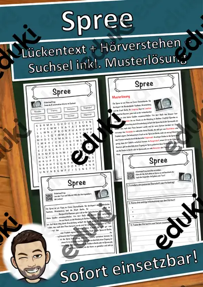
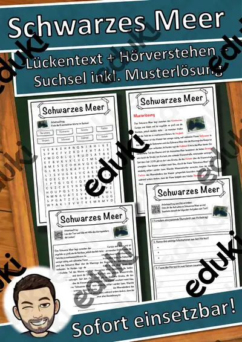

Rhein, Donau und die großen Flüsse: Arbeitsblätter für Klasse 4–8 (Erdkunde)
Flüsse und Meere gliedern Landschaften und Verkehrswege. Die Erdkunde lernt den Verlauf wichtiger Flüsse, ihre Nutzung und ihre Bedeutung als Lebensraum und Grenze.
Gearbeitet wird in der Regel an Rhein, Donau und Elbe, ergänzt um Nordsee, Ostsee und Mittelmeer.
Die Lehrpläne der Länder sehen das Thema im Fach Erdkunde vor, in der Regel in den Klassen 4 bis 8. Als Ziel gilt: die Schülerinnen und Schüler beschreiben Verlauf und Bedeutung wichtiger Gewässer.
Wer Rhein, Donau und die großen Flüsse auf mehrere Stunden verteilt, startet mit Rhein, übt an Elbe und schließt mit Ostsee ab. Alle Blätter sind kopierfertig und enthalten Lösungen für die schnelle Kontrolle. Mit den Lückentexten und dem Hörverstehen per QR-Code wird auch das Zuhören trainiert.
16 passende Materialien stehen bereit, etwa Spree Lückentext mit Wortspeicher Hörverstehen, Schwarzes Meer Lückentext mit Wortspeicher und Weser Lückentext mit Wortspeicher Hörverstehen. Vertreten sind 16 Lückentexte mit Hörverstehen; die Stufen reichen über Klasse 5–7. Eine Flusskarte, in die Städte und Nebenflüsse eingetragen werden, schafft Orientierung.
Das gehört zum Thema
Passende Arbeitsblätter und Materialpakete

Spree Lückentext mit Wortspeicher Hörverstehen und Suchsel

Schwarzes Meer Lückentext mit Wortspeicher Hörverstehen und Suchsel

Weser Lückentext mit Wortspeicher Hörverstehen und Suchsel

Rotes Meer Lückentext mit Wortspeicher Hörverstehen und Suchsel

Rhein Lückentext mit Wortspeicher Hörverstehen und Suchsel

Ostsee Lückentext mit Wortspeicher Hörverstehen und Suchsel

Oder Lückentext mit Wortspeicher Hörverstehen und Suchsel

Donau Lückentext mit Wortspeicher Hörverstehen und Suchsel

Mosel Lückentext mit Wortspeicher Hörverstehen und Suchsel

Mittelmeer Lückentext mit Wortspeicher Hörverstehen und Suchsel

Mississippi Lückentext mit Wortspeicher Hörverstehen und Suchsel

Bodensee Lückentext mit Wortspeicher Hörverstehen und Suchsel

Kaspisches Meer Lückentext mit Wortspeicher Hörverstehen und Suchsel

Inn Lückentext mit Wortspeicher Hörverstehen und Suchsel

Elbe Lückentext mit Wortspeicher Hörverstehen und Suchsel

Amazonas Lückentext mit Wortspeicher Hörverstehen und Suchsel
Häufige Fragen
Für welche Klassenstufe passen die Arbeitsblätter zu Rhein, Donau und die großen Flüsse?
Der Schwerpunkt liegt auf Klasse 6; insgesamt deckt die Auswahl (16 Titel) Klasse 5–7 ab. In der Beschreibung jedes Materials steht die empfohlene Stufe.
Welche Inhalte decken die Materialien zu Rhein, Donau und die großen Flüsse ab?
Die Materialien arbeiten an Rhein, Donau und Elbe und gehen dann weiter zu Nordsee, Ostsee und Mittelmeer. Vorab lohnt ein Blick in den Lehrplan des eigenen Bundeslandes.
Wie setze ich Rhein, Donau und die großen Flüsse im Unterricht ein?
Eine Flusskarte, in die Städte und Nebenflüsse eingetragen werden, schafft Orientierung. Danach genügt meist ein Material als Einstieg und eines zum Üben.
Mehr Material nach Fach und Klasse
- Alle Materialien Biologie
- Arbeitsblätter Biologie Klasse 4
- Arbeitsblätter Biologie Klasse 5
- Arbeitsblätter Biologie Klasse 6
- Arbeitsblätter Biologie Klasse 7
- Arbeitsblätter Biologie Klasse 8
- Unterrichtsmaterial Klasse 4
- Unterrichtsmaterial Klasse 5
- Unterrichtsmaterial Klasse 6
- Unterrichtsmaterial Klasse 7
- Unterrichtsmaterial Klasse 8
Verwandte Lehrplanthemen
- Bundesländer und Landeshauptstädte (Erdkunde, Klasse 3–7)
- Energie, Rohstoffe und Umwelt (Erdkunde, Klasse 4–10)
- Erdbeben und Vulkane (Erdkunde, Klasse 5–9)
- Alpen und Gebirge (Erdkunde, Klasse 4–8)
- Heimat, Region und Bundesländer-Vergleich (Erdkunde, Klasse 3–8)